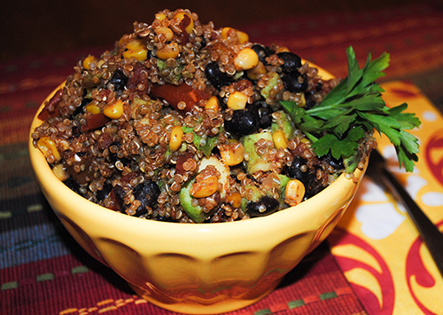

ONE PAN MEXICAN QUINOA
Deliciously light, healthy and nutritious, sevrved in one pan! Dig into this spicy, crunchy One Pan Mexican Quinoa dinner!

Yield: 4 Servings
Prep Time: 10 Minutes
Cook Time: 25 Minutes
Total Time: 35 Minutes
Calories: 491
INGREDIENTS:
- 1 tablespoon olive oil
- 2 cloves garlic, minced
- 1 jalapeno, minced
- 1 cup quinoa
- 1 cup vegetable broth
- 1 (15-ounce) can black beans, drained and rinsed
- 1 (14.5 oz) can fire-roasted diced tomatoes
- 1 cup corn kernels
- 1 teaspoon chili powder
- 1/2 teaspoon cumin
- Kosher salt and freshly ground black pepper, to taste
- 1 avocado, halved, seeded, peeled and diced
- 1 tablespoon lime juice
- 2 tablespoons chopped fresh cilantro leaves
DIRECTIONS:
- Heat olive oil in a large skillet over medium high heat.
- Add garlic and jalapeno, and cook until fragrant; 30 seconds - 1 minute.
- Stir in quinoa, broth, beans, tomatoes, corn, chili powder, and cumin; season with salt and pepper.
- Bring to a boil; cover, reduce heat, and simmer until quinoa is cooked through, 15-20 minutes.
- Stir in avocado, lime juice and cilantro.
- Serve immediately.